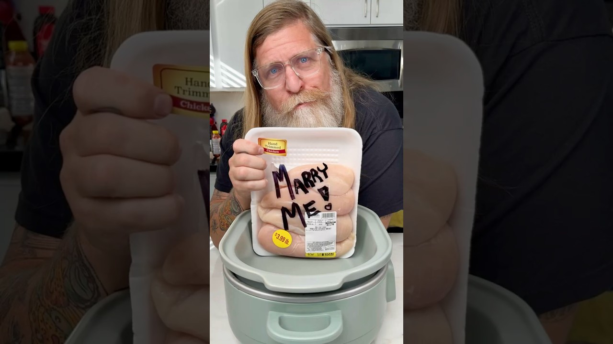

| Course | Main Dish |
| Categories | Chicken |
| Collections | Crockpot, Drew Cooks |
| Source | Drew Cooks – YouTube |
| Notes | see “Notes” below |

Reconstructed from the video's narration (spoken recipe) — the video has no written recipe in its description. Quantities and steps below are only those actually stated out loud; see "Gaps in this export" for what wasn't specified.
Chicken breasts (quantity not stated)
Salt, pepper, garlic powder, onion powder — for seasoning the chicken (amounts not stated)
1 1/2 cups chicken broth
3 Tbsp cornstarch
1 tsp Italian seasoning
1/2 tsp salt
1/2 tsp pepper
1/2 tsp paprika
1/2 tsp crushed red pepper flakes
4–5 garlic cloves
1/3 cup sun-dried tomatoes
1 cup heavy cream
1/2 cup fresh grated Parmesan cheese
Fresh chopped basil, to garnish (optional)
Pasta, to serve
Place the chicken breasts in the slow cooker and spread them out evenly across the bottom.
Season the chicken with salt, pepper, garlic powder, and onion powder.
Optional but recommended if you're trying to impress someone: sear the seasoned chicken. Set it aside.
In a bowl, whisk together 1 1/2 cups chicken broth and 3 Tbsp cornstarch until combined. Pour into the slow cooker.
Add 1 tsp Italian seasoning, 1/2 tsp salt, 1/2 tsp pepper, 1/2 tsp paprika, and 1/2 tsp crushed red pepper flakes. Mix together.
Return the chicken to the slow cooker.
Chop 4–5 garlic cloves and mix them in.
Pat dry and chop about 1/3 cup of sun-dried tomatoes; sprinkle them over the chicken breasts.
Put the lid on. Set the slow cooker to low for 6 hours.
When done, remove the lid. Check with a meat thermometer or fork that the chicken is fully cooked and falling apart.
Carefully remove the chicken. Stir 1 cup heavy cream and 1/2 cup fresh grated Parmesan cheese into the sauce until combined.
Return the chicken to the sauce.
Garnish with fresh chopped basil if you have it. Taste to check seasoning, then serve over a bed of pasta with the sauce.
The sear in step 3 is described as not strictly required, but recommended for a better result.
Serve over pasta, spooning the cream sauce over the top.
Gap in this export: Number or weight of chicken breasts
Gap in this export: Amounts of the salt / pepper / garlic powder / onion powder used to season the chicken in step 2
Gap in this export: Oil or fat for searing
Gap in this export: Prep time and total time
Gap in this export: Number of servings
Gap in this export: Type/cut of pasta